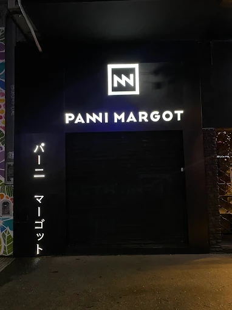

Ocho caminos
un sistema
Ocho hipótesis de diseño para el mismo sitio, en dos actos: primero la mano — el cuerpo, la tinta, la memoria — y después la máquina y el mundo — la consola, el plano, el objeto, el territorio, la calle. Las ocho cumplen las mismas reglas: blanco y negro estricto, el nombre siempre en vector, nada se explica. Esta página argumenta cada camino. El veredicto es de la marca.
La mano

Gravedad
- ABase validada — Parte A del catálogoGrano fílmico, distorsión líquida amplificada por velocidad de scroll, atracción de la tela hacia el cursor, aberración cromática, scroll horizontal pineado, linterna, takeover. Ya funciona: no se toca, se endurece.
- 40Magnetismo real de elementosLos botones del header ceden hacia el puntero (≤8px, retorno elástico): el peso deja de ser metáfora. Nunca en elementos de compra — la física no puede costar una venta.
- 51Carga real ligada al loaderEl contador deja de mentir: avanza por imagen efectivamente descargada. Corrección honesta señalada como deuda en el catálogo.
- 76Niveles de degradación por hardwareLa física es privilegio del hardware que la aguanta: con menos de 4 núcleos o poca memoria, fallback CSS. Obligatorio según el propio catálogo.
- 77Manejo de webglcontextlostSi el contexto cae, el canvas se retira y queda el DOM legible — nunca un rectángulo negro muerto.

Oficio
- 15Tramado halftone — la pieza centralLa foto colapsa a puntos de tinta en grilla rotada 45°; la densidad de la trama responde a la distancia del puntero: cerca, detalle; lejos, mancha. Blanco y negro puro por definición.
- 11Trazo SVG dibujado por scrollUna pincelada caligráfica se traza con stroke-dashoffset atado al progreso: la única traducción honesta de «hecho a mano» al lenguaje web.
- 16Umbral / posterizaciónEn hover la prenda queda en dos niveles, silueta pura: brutal y coherente con la tinta.
- 52Collage con marcos rotadosSombras duras sin blur, rotaciones de imprenta apurada. Está en la gráfica real de la marca: es cita, no invento.
- 57Columnas sticky desfasadasManifiesto pineado a la izquierda, producto corriendo a la derecha: la coreografía editorial de moda clásica.
- 38Ajuste exacto por líneaCada línea del cartel toca ambos márgenes, medida con JS: el recurso brutalista-editorial por excelencia.
- 37Contorno vs rellenoTitulares alternando trazo hueco y letra sólida: dos tintas con una sola.
- 34Texto relleno de imagenLa palabra grande con el kimono pintado adentro (background-clip): monumental y artesanal a la vez.
- 2Skew por velocidad de scrollLa grilla se inclina ±3° con la velocidad y vuelve con lerp: física mínima para que el papel no sea inerte.
- 60+66Borde que se dibuja + LQIPEl contorno del botón se traza en hover; las fotos entran desde un gris neutro. Micro-oficio barato que suma percepción de calidad.

Archivo
- 5Tarjetas apiladas (sticky stacking) — la pieza centralCada prenda es una lápida a pantalla completa; la siguiente se monta mientras la anterior se encoge y oscurece. La cadencia del recorrido de sala.
- 41Estela de imágenesEl puntero deja fotos del catálogo a su paso, que aparecen y se desvanecen: la memoria como fenómeno del gesto, no como listado.
- 72Reflector que invierte el temaUn círculo de luz vuelve legible el manifiesto solo por partes (capa duplicada con mask-image radial): el archivo no se entrega entero.
- 74Reloj del local en vivoHora real de Buenos Aires, segundo a segundo: HONDURAS 4940 :: ABIERTO o CERRADO · . El museo tiene horario.
- 31Fuente variable animadaEl peso del título oscila 300→800 en loop lento: el archivo respira. El eje ya viene gratis con Archivo variable.
- 30Entrada por carácter con rotación 3D entra letra por letra, rotando en X, una sola vez: la solemnidad justa, sin loop.
- 7Franja horizontal con inercia de punteroLa tira de miniaturas corre libre con pointer events + lerp, sin scrollbar visible: el depósito del museo.
- 61+36Marquesina en el botón + texto elásticoEl CTA corre en loop y los titulares se estiran con la velocidad de scroll: la física del sistema, en dosis mínima.
Los tres primeros caminos son la mano: el cuerpo que pesa, la tinta que marca, la memoria que guarda. Los cinco que siguen salen del taller hacia afuera — la máquina y el mundo: la consola que decodifica, el plano que antecede a la prenda, el objeto que se rodea, el territorio que desorienta y la calle que entra por la vidriera.
La máquina y el mundo

Terminal
- 17Shader ASCII — el núcleoLa fotografía se degrada a datos: caracteres en grilla por luminancia. Regla de dosis del catálogo: solo en el hero y en un hover de la grilla — usado de más, el sitio se vuelve demo.
- 18Estética CRT en blanco y negroScanlines, viñeta de tubo, flicker leve. Sin verde: es un monitor de seguridad, no una consola ochentosa.
- 28Glitch de interferenciaDos o tres frames de slices al cargar y al cruzar secciones, como una señal que se reengancha. Nunca en loop continuo.
- 35Morfosis de idiomaGENDERLESS ⇄ ⇄ SIN GÉNERO con scramble entre estados: la máquina no elige idioma, los recorre.
- 42Rastro de cursor (fósforo)Copias del punto con retardo y opacidad decreciente: el tubo tarda en apagarse. Solo desktop.
- 44Ripple al clicUn anillo desde el punto de contacto: el único acuse de recibo del sistema.
- 75Huevo de pascuaUna secuencia de teclas abre un modo oculto con la gráfica de colaboración real. La marca ya cultiva lo críptico; no hay pista visible.
- 10Header direccionalLa barra de estado se retrae al bajar y reaparece al subir: la interfaz se guarda sola.
- 63Sonido — previsto, omitidoPulsos de teclado y confirmaciones, silenciados por defecto con interruptor. En el mockup se omite deliberadamente: se declara, no se simula.
Moldería
- 48Cortina con morfosis SVG — el núcleoLas transiciones no son rectángulos: son líneas de corte que se pliegan, un path que muta de recto a curvo como una costura que cede.
- 6Pineado multi-etapa — el corazónEl molde del kimono se arma en cuatro etapas al recorrer la sección pineada: piezas planas, unión, pliegue, y crossfade a la prenda real. Contador 01/04 :: CORTE.
- 32Texto sobre trazadoLas medidas corren a lo largo de la costura curva (textPath): 68 CM :: TALLE 2 :: HILO DE LA TELA. Es como se rotula un molde real.
- 50Persianas / tajosLa tijera: la imagen cortada en franjas verticales que entran desfasadas.
- 22Papel de calcoUna capa translúcida (backdrop-filter) superpuesta al molde, que sigue al puntero: se ve el plano de abajo, velado.
- 53Pantalla divididaPlano SVG pineado a la izquierda, prenda real corriendo a la derecha: el antes y el después conviven.
- 46+47FLIP + View Transitions — en el sitio realLa pieza plana se levanta y se convierte en la prenda vestida. En el mockup se declara como infraestructura del sitio final, no se finge.

Volumen
- 4Rotación simulada — el núcleoVisor de 4–6 vistas recorridas con el puntero o con la sección pineada, crossfade entre tomas, contador VISTA 02/04. Declarado como simulación: data-sim="4-vistas".
- 68Comparador derecho / revésBarra entre dos tomas de la misma sesión (clip-path dinámico), operable también por teclado. El forro a la vista.
- 21Paralaje por profundidad simuladoEl hero en tres capas del mismo archivo a escalas distintas, corriendo a velocidades distintas con el puntero: relieve sin mapa real, declarado como simulación.
- 8Perspectiva 3D realTarjetas en translateZ escalonado bajo perspective: profundidad geométrica, no fingida por velocidad.
- 58Inclinación 3D en hoverTilt ±6° con brillo especular: la tarjeta responde como un objeto con peso. Apagado en táctil y con reduced-motion.
- 26Cinta cilíndricaMiniaturas con rotateY decreciente hacia los bordes: el perchero como tambor, CSS puro.
- 27Instanced meshes — deuda declaradaSin WebGL en el mockup: se lista como requisito del sitio real para que una grilla con volumen aguante.

Deriva
- 45Lienzo infinito de arrastre — el núcleoEl catálogo es un plano de ~3000×2000 que se lleva con el puntero, con inercia y límites elásticos: no una página que se baja.
- 56Disposición radial / orgánicaPosiciones pseudoaleatorias con seed fija — determinista, no caprichosa —, tamaños variados, rotaciones de ±3°.
- 23Celdas Voronoi de fondoLa cartografía: ~14 celdas SVG precalculadas, trazo fino gris. Cada pieza ocupa una parcela del territorio.
- 59Foco de linternaTodo el plano en penumbra; un círculo de luz sigue al puntero y revela. Solo se ve lo que se ilumina.
- 49Revelado circular desde el clicEntrar a una pieza es abrir un pozo en el territorio: el círculo se expande desde el punto y muestra la ficha con precio.
- 73Estado de reposoSin input durante seis segundos, el plano deriva solo. Cualquier gesto lo frena: el mapa tiene corriente propia.
- 44RippleCada suelta del plano deja una onda: el territorio acusa el paso.
- ≡Vista lista — la renuncia hecha sistemaUn botón fijo abre las mismas piezas en lista mono navegable por teclado, con precios visibles. No es un parche de accesibilidad: es condición de existencia del camino.

Vidriera
- 70Máscara con el monograma — el núcleoEl símbolo NN a pantalla casi completa con la fachada adentro (clipPath SVG), pan lento. La firma memorable con un activo que ya existe.
- 65Tratamiento unificadoLa fachada pasa por un canvas con grano y parpadeo leve de luz: la textura de video sin video — una sola gramática visual para foto y calle.
- 71Tema progresivo por scrollEl día que cae: el estado inicial lo decide la hora real de Buenos Aires, y el recorrido interpola papel ⇄ tinta. Si es de noche, el recorrido amanece.
- 13Transición guiada por ruidoFachada de día y de noche fundidas por una máscara de turbulencia animada: el reflejo que cambia sobre el vidrio.
- 59Foco de vidrieraTres piezas sobre negro, cada una bajo un cono de luz que se enciende al entrar en viewport: el escaparate literal.
- 10PersianaEl header se retrae al bajar con sombra de lamas: el local que cierra y abre con el gesto.
Comparativa
| Camino | Dominante | Efecto central | Riesgo | Costo estimado en el sitio real |
|---|---|---|---|---|
| A · Gravedad | Negro. Noche física. | Shader líquido de la Parte A + magnetismo real (#40) | GPU en gama media; el motor puede opacar la prenda | Alto — WebGL con 3 niveles de degradación (#76) y contexto protegido (#77) |
| B · Oficio | Papel blanco. Tinta. | Halftone interactivo (#15) | Monotonía de trama; el gesto central no existe en táctil | Medio — un shader simple; el resto CSS y SVG |
| C · Archivo | Nocturno. Museo. | Sticky stacking (#5) + tiempo real (#74) | Solemnidad; conversión diferida | Medio-alto — coreografía de scroll fina, sin GPU pesada |
| D · Terminal | Negro. Monitor. | Shader ASCII (#17) + CRT (#18) | Sobredosis: el ASCII usado de más vuelve el sitio demo | Medio — canvas 2D y CSS; el sonido (#63) queda previsto, omitido |
| E · Moldería | Papel técnico. Línea. | Pineado multi-etapa del molde (#6) + cortina con morfosis (#48) | Una moldería falsa se nota; frialdad cerebral | Medio-alto — SVG fino a mano; la real exige los planos de la marca |
| F · Volumen | Negro cámara. Objeto. | Rotación simulada (#4) + comparador derecho/revés (#68) | El que peor escala en gama media; producción fotográfica cara | Alto — mesa giratoria y 24–36 tomas por pieza; el mockup simula con 4 vistas |
| G · Deriva | Negro profundo. Territorio. | Lienzo infinito de arrastre (#45) + linterna (#59) | Comercialmente suicida como home; solo vale con vista lista | Medio — sin WebGL; el costo real es el doble mantenimiento mapa + lista |
| H · Vidriera | La hora decide: papel ⇄ tinta. | Máscara con el monograma (#70) + tema progresivo (#71) | Externaliza la calidad a la producción audiovisual | Medio en código, alto en producción — el mockup anima fotos; lo real es filmación |
| Órganos transversales | Pertenecen a cualquier esqueleto | #46+#47 FLIP + View Transitions · #63 diseño sonoro · #71 tema progresivo · #27 instanced meshes | Ninguno propio: son infraestructura de cohesión, no efectos visibles | Se presupuestan una sola vez y sirven al camino que gane |
Los ocho comparten el sistema: logo siempre vector, blanco y negro estricto, grano fílmico, dialecto terminal, katakana de fachada, degradación completa con reduced-motion. No son excluyentes: son combinables. El sitio final puede tomar el esqueleto de uno y órganos de otros — el halftone de Oficio en las fichas de Gravedad, el reloj del Archivo en cualquier footer, el mapa de Deriva como pantalla de un drop, la fachada de Vidriera como hero de quien la pida.
ESTA PÁGINA NO DECIDE :: ARGUMENTA